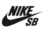

Participantes
kelly slater
the break
Robert Kelly Slater (Cocoa Beach, 11 de febrero de 1972) es un surfista profesional estadounidense de origen sirio e irlandés,1 ganador once veces del campeonato del mundo. Es conocido también por sus sobrenombres Slater o Slats.


italo Ferreira
the break
Italo Ferreira (Baía Formosa, 6 de mayo de 1994) es un surfista profesional brasileño que está en el ASP World Tour desde 2015. En 2021 se coronó como el primer campeón olímpico en la historia del surf, recibiendo la medalla de oro tras vencer al surfista Kanoa Igarashi en los Juegos Olímpicos de Tokio 2020.

John john
the break
John "John John" Alexander Florence (nacido el 18 de octubre de 1992 en Honolulu, Hawai)1 es un surfista profesional estadounidense. Es conocido como "uno de los surfistas de tubo más dominantes de su época" y ganó títulos mundiales consecutivos en la World Surf League de 2016 y en el World Surf League Men's Championship Tour de 2017.2 Es el primer surfista nacido en Hawái que gana títulos mundiales consecutivos desde el fallecido Andy Irons y uno de los cinco que han logrado dicha hazaña.2

Kanoa
the break
Igarashi Kanoa (Huntington Beach, Estados Unidos, 1 de octubre de 1997) es un deportista japonés que compite en surf. Participó en los Juegos Olímpicos de Tokio 2020, obteniendo una medalla de plata en la prueba masculina.

-

- 
-

-